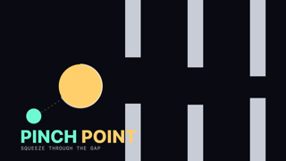
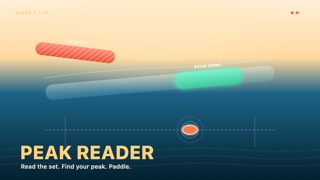
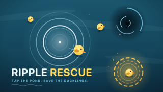
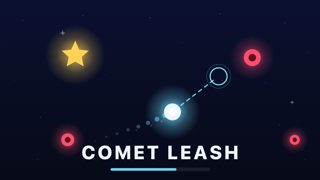
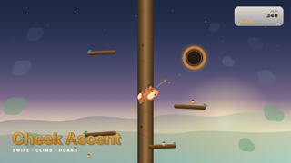
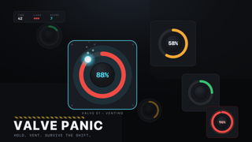
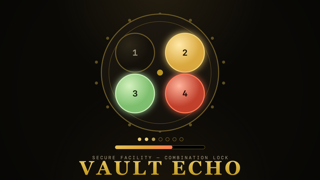
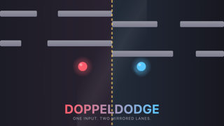

A collection of original browser game prototypes.

Pinch Point is an endless dodger where one finger does it all. Press and drag: moving up or down steers your glowing blob, while dragging right or left from your starting point grows or shrinks it. Squeeze through narrowing gates before they close in — staying bigger scores more but leaves less room to fit.

Peak Reader puts you in the lineup, not on the board. Drag to track a wave's drifting peak and tap fast to paddle right before it breaks. Some waves flash a decoy peak first, identical to the real one, timed differently — paddle for it and you wipe out. Read closeouts, tiers, and fakes across ten waves with three lives.

You can't touch the ducklings — you can only make waves. Tap the pond to send out ripples that push everything away from your finger, herding lost ducklings into the glowing nest before hungry whirlpools swallow them. But every wave shoves every duck it crosses, so one careless splash can doom the duckling you just saved. Lose three and the pond goes quiet.

Hold a finger anywhere and your comet surges toward it on an energy leash — but the leash drains while you pull, and burning it out leaves you helpless until it recovers. Release to coast on momentum and recharge. Grab gold stars to score, dodge the red mines crossing the sky, and survive with three lives. Short tugs and smart coasting beat holding on.

Swipe a squirrel up an endless, swaying tree, leaping branch to branch. Every acorn you stuff in your cheeks weakens your next jump, so hoarding gets risky. Land on a rare hollow branch to bank your acorns safely before gravity catches up. Simple one-finger swipes, an addictive risk-reward climb, and a persistent high score.

Steam valves overheat across a control panel, and only your fingers can vent them. Hold a lit valve to cool it down — let go and pressure climbs again. As more valves come online over a 75-second shift, you'll need real multi-touch triage across both hands. Releasing a vent scores points in three tiers: routine, warning, and clutch last-second saves earn progressively more. Survive with 3 lives.

Vault Echo is a memory-heist game: watch four brass tumbler pads flash a growing combination, then tap them back in order before time runs out. Crack a round and choose — bank your loot for a safe score, or push deeper into a longer, faster sequence for a bigger prize. One wrong tap, or running out of time, wipes your unbanked total. Clearing all ten rounds doubles your final haul.

Doppeldodge splits the screen into two mirrored lanes. You steer a red dot on the left, while a blue echo mirrors your position on the right, like glass. Each lane drops different falling gates, so clearing a gap on your side can send the echo into a wall. Hold the dot to move; release to pause. One hit on either dot ends the run, and things speed up over time.